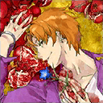
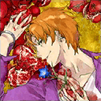

- 4/15
- 定期維修的告知（4/21 13:00實施）
非常感謝您的使用。
這裡是「Fate/Grand Order」營運團隊。
將於下記的期間實施「Fate/Grand Order」的定期維修。
維修中無法遊玩「Fate/Grand Order」。
在維修開始前，請結束關卡及戰鬥。
※若在關卡及戰鬥進行中開始維修，或不正常結束的話，會有無法領取報酬的情況。
■時間
2016年4月21日(四) 13:00～16:00（預定）
※維修結束的預定時間可能會有前後差異。
※隨著維修開始時間的變更，現正舉行的活動「達文西和七位贗品英靈」及「貞德〔Alter〕Pick Up召喚」的結束時間變更為4月21日（四）12:59。
▼遊戲的更新
1.「Fate/Accel Zero Order」開幕前7大宣傳活動的開始(4/21追記)
2.聖晶石召喚(期間限定)的更新(4/21追記)
3.一部份Servant的戰鬥動作及寶具演出的修改(4/21追記)
※對象Servant如下。
・

4.一部份Servant的幕間物語追加(4/21追記)
※對象Servant如下。
・ 第2節
第2節
5.在一部份Servant的指令卡顯示圖像的修改(4/21追記)
※對象Servant如下。
・
6.活動「達文西和七位贗品英靈」的結束
7.從一部份概念禮裝的保有技能刪除已結束活動相關的文字
※對象概念禮裝如下。
･ 

▼問題的修正
1.一部份Servant的戰鬥角色圖像的問題修正
※對象Servant如下。
･
2.戰鬥中選擇一部份敵人時，目標圖示不正常顯示的問題修正
※對象敵人如下。
･噬魂者(ソウルイーター)
3.一部份文字及圖像的錯字漏字修正
對上述的問題修正感到抱歉，會向對象的玩家做出以下對應。
【對象】
於4/21(四) 12:59前有遊玩過「Fate/Grand Order」的所有玩家
【對應內容】
・聖晶石3個
【配布方法】
在禮物箱配布
【配布期間】
2016年4月22日(五)AM3:00～2016年9月30日(五)22:59
非常抱歉麻煩到正在使用的玩家。